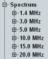
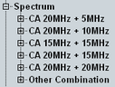

Spectrum Limits
Without carrier aggregation, all spectrum limits can be configured per channel bandwidth.

One node per bandwidth, no CA
With carrier aggregation, the spectrum limits can be configured per channel bandwidth combination. There are some nodes for specific channel bandwidth combinations, required for 3GPP tests. If you use another bandwidth combination, the node "Other Combination" applies.
Example: The node "CA 20 MHz + 10 MHz" applies, if the CC1 has a bandwidth of 20 MHz and the CC2 a bandwidth of 10 MHz, or vice versa. The node "Other Combination" is used, for example, for 15 MHz + 10 MHz or 1.4 MHz + 5 MHz.

One node per bandwidth combination, with CA
The individual spectrum limits are described in the following sections.